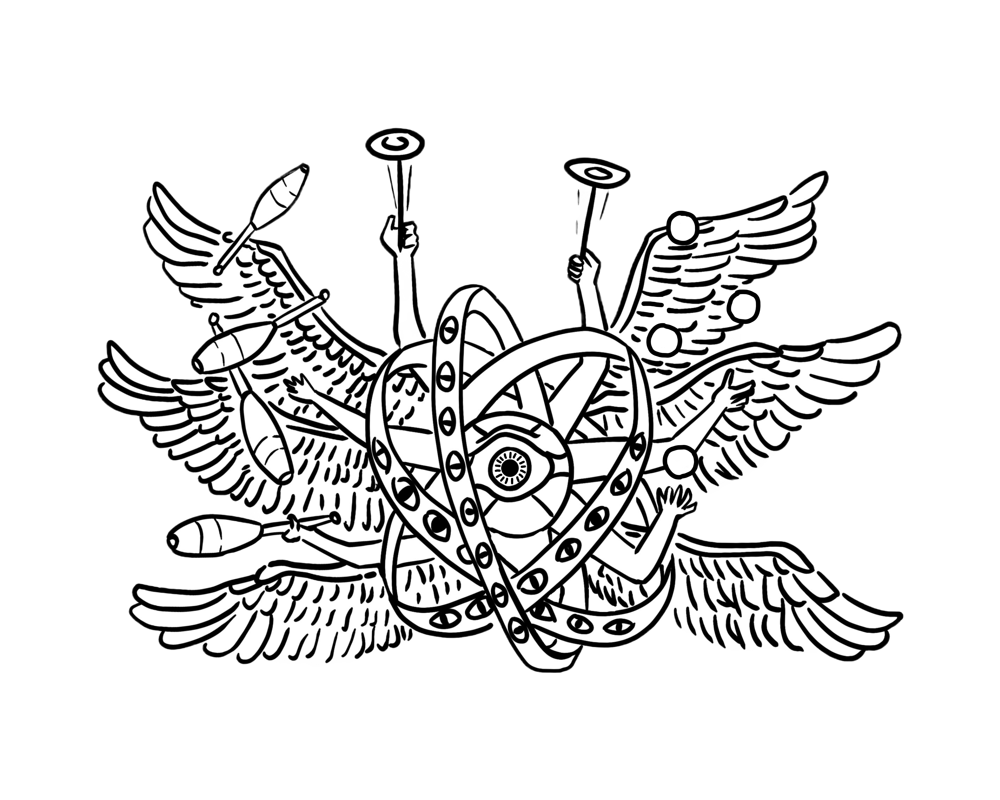
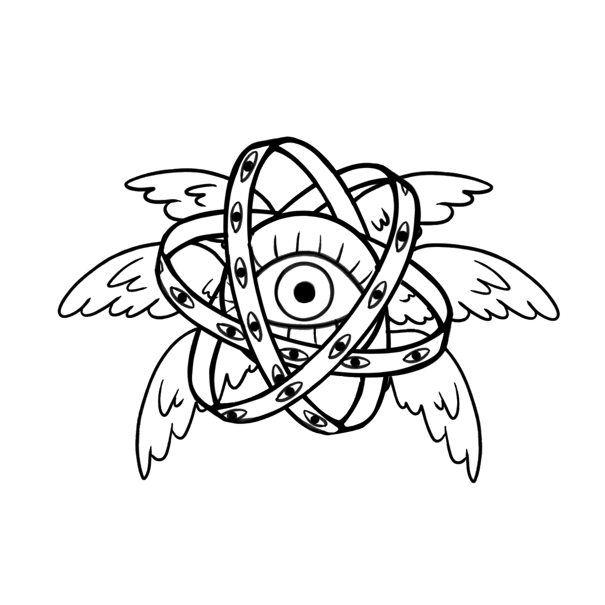

Introduced in the summer of 2023, Gareth (he/they) is the official mascot of Balls!
He is a biblically accurate angel who can simultaneously juggle clubs, balls, and spin plates,
making him the most talented member of the society as a matter of canon. He now features in our logo and official branding,
alongside Baby Gareth, his junior counterpart for scaling purposes.
Gareth's name continues to be a highly contested matter within the society.
About
Founded as BALLS! in 2002 and successor to the UCL Tossers. For over twenty years, the Balls! Juggling and Circus Society has been providing a space for those wishing to practice juggling, flow arts, and other circus skills.
Our regular sessions mix individual learning with workshops in an informal and friendly atmosphere.
Learn a skill that will last you for life! – or, if you end up outside Jobcentre because you do a fake humanities degree, a skill that will keep you alive.
We currently teach juggling, unicycling, mini circus biking, poi, staff spinning, diabolo, hula hooping, and much more.
We also hold monthly fire nights where you will be able to try out your skills with extra consequences (fire), along with various meetups and plenty of social events!
All skill levels are welcome – whether you are looking for a space to practice cool circus tricks or want to learn a new skill to convince your ex that you are living your best life without them;
join us in the North Cloisters every Tuesday 7-9pm for our regular sessions and at The Huntley from 9-10pm for our social afterwards!
Join us today for just £5 via Students' Union UCL.
We're also on Twitter, Instagram,
and Facebook.
- Ringmaster: Adam Klicka
- Master of Coins: Romy Williamson
- Master of Balls: Jennifer Huang
- Master of Wellbeing, Prosperity, and All That Is Good And Holy: Marius Bommier
- Master of Propaganda: Ralf Arnell
The Clowncil
The Balls! Committee is comprised of five members: President, Treasurer, Health, Safety and Welfare Officer, Equipment Officer, and Social Secretary.
Since 2022, they may also be referred to as, respectively, Ringmaster, Master of Coins,
Master of Wellbeing, Prosperity and All That Is Good And Holy, Master of Balls, and Master of Taverns.
Committee of 2024/25:
Our Mascot


History
The Balls! Juggling and Circus Society was founded in 2002 by Cameron Christie as BALLS! for the express purpose of having a society called 'balls'. Although 'balls' was officially dropped from the society's name sometime in the mid-2010s, it was reinstated in its current form in 2024.
2023–24
President: Nick Miao. Welfare: Marian Jago. Social Sec: Molly McKenna. Awarded a Silver Society Development Award for doing the absolute bare minimum.
2022–23
Nick Miao became Ringmaster, Madeline Lee became Master of Coins, and Marian Jago became Master of Wellbeing, Prosperity, and All That Is Good And Holy.
We revived the post Master of Balls by amending the constitution alongside expanding the committee to add a new social secretary and renaming the positions.
Revived and hosted the National Juggling Varsity and celebrated the 20th anniversary of the society with an entire evening of performances - check out the photo album here.
Also shortlisted for Most Developed Arts Society at the Arts Awards but unfortunately lost to Salsa Society. Better luck next time.
2021–22
Gyen Angel stepped in and saved the society from the verge of disaffiliation when the elected president resigned at the start of the year. Changed the session day from Mondays to Tuesdays. Welfare Officer Nick Miao set up an Instagram and a (new) Twitter account for the society and started shitposting online.
2020–21
President: Justin Yim. No sessions as everything was over Zoom (and juggling over Zoom is difficult). Got to experience what a Welcome Fair is like over zoom (no one showed up).
2019–20
President: Justin Yim. Treasurer: Yuzhen (Rainy) Dong. Did well until March then everything closed because of Covid.
2018–19
President: Karen Serrano. Treasurer: Christopher Thong. Performed in the Bloomsbury Theatre as part of the Students' Union UCL Society Showcase. Did our first fire show in the UCL Main Quad.
2017–18
President: Lorik Bothwell. Treasurer: Karen Serrano. Had a social for the society's 15-year anniversary. Performed at the UCL Winter Arts festival.
2016–17
President: Nathan Waldie. Treasurer: Daniel Chakrabarti. Did our first major show in a long time - UCLU Comedy Gala at the Shaw Theatre.
2015–16
President: Nathan Waldie. Known as the Dark Ages because we had very few members and were almost disaffiliated as a result.
2014–15
President: Adam Paxton. Treasurer: Nathan Waldie. Social Secretary: Alice Ratheram. Master of Balls: Oskar Gordon.
2013–14
President: Adam Paxton. Treasurer: James Lidgett.
2012–13
President: Siim Valner. Last committee to use the 'Balls' name.
2011–12
Juggling Varsity hosted at UCL. We lost miserably (again) with only 7 points. Oxford had 16, Imperial 36.5, and Cambridge won again with 40.
2010–11
Juggling Varsity hosted in Cambridge. CUJA's old website shows that we lost miserably with only 8 points. Oxford had 10, Imperial 16, and Cambridge winning with 17.
2004–05
Patrick Nasralla became president and Emma-Jane Smith became Treasurer. Iain Murray carried on his casual webmaster role.
2003–04
Cameron Christie continued to be president, despite being in his final year. I think Alan and Judy were supposed to be helping. In the first term we performed in a London nightclub and at a student rally using glow balls and fire.
2002–03
BALLS! was set up in 2002 by Cameron Christie with help from Alan Hewitt (and others?). Setting up BALLS! as an official society and finding a venue (Garage theatre) was a lot of work, for which we should be grateful. Despite being a small society in its first year, BALLS! put on a popular performance at the UCL union talent show.
Before BALLS!
Apparently there used to be a society called the UCL Tossers during the 1990s. Juggling.org lists the contact as Ab Wilson and says they met in Carrol Marx Hall, Huntley Street. I'm sure there have been other UCL juggling meetings as well.